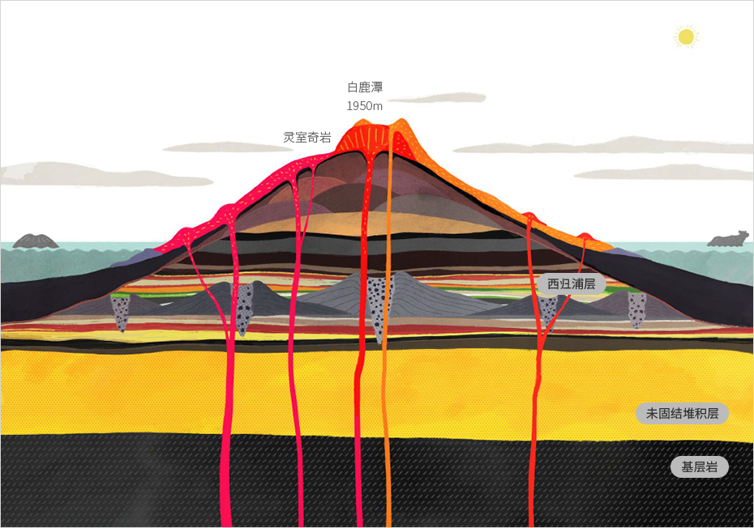
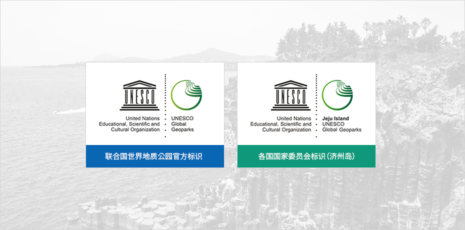
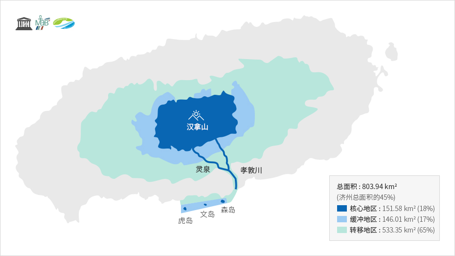

优越的自然环境
- Home
- 基础情况
- 地理
- 优越的自然环境
全球唯一的UNESCO三冠王
济州岛是一座椭圆形火山岛，东西长约73km，南北长约41km。汉拿山耸立于岛屿中央，海拔1950m，为韩国第一高峰。
济州岛因火山活动形成，拥有丰富独特的火山地形，整座岛堪称一座“火山博物馆”。而且，岛上地表还分布着360多座大小不一的“岳（오름）1)”，地下则遍布160多座溶岩洞穴。一座小岛上有如此多的火山和洞穴，这在世界范围内实属罕见。
※ 1) 在济州话中代指小型火山。



济州 世界自然遗产
世界自然遗产 (World Natural Heritage) - 2007年07月02日被列入名录
1972年，联合国教科文组织通过了《保护世界文化和自然遗产公约》，开始将应当受到全人类保护的文化和自然环境特别突出的地区列入世界遗产名录。
2007年，济州岛的汉拿山自然保护区、城山日出峰、拒文岳熔岩洞窟群以"济州火山岛和熔岩洞窟"之名，成为韩国首个世界自然遗产，覆盖区域约占济州岛总面积的10%。
济州 世界地质公园
世界地质公园(Global Geopark)-2010年10月01日获得认证
世界地址公园是联合国教科文组织的一项计划，旨在保护地质学价值突出的自然遗产区域，进而促进旅游业发展，提高居民收入水平。
2010年10月，济州岛被联合国教科文组织评选为世界地质公园。


※ 资料来源 : 济州地质公园 (http://www.jeju.go.kr/geopark/index.htm)
济州 生物圈保护区
生物圈保护区(Biosphere Reserve) - 2002年12月16日获得认证
生物圈保护区是联合国教科文组织在“人与生物圈计划（MAB）”中提出的概念，是指兼顾保护生物多样性和可持续利用自然资源的陆地、海岸带或海洋生态系统区域。截至2019年，全世界124个国家的701个地区被划定为生物圈保护区。
济州岛凭借丰富物种和独特生态而获得认可，2002年汉拿山周围海拔200米以上区域都被联合国教科文组织评选为“生物圈保护区”，2019年生物圈保护区指定范围扩大到整个济州道，包含楸子岛等附属岛屿在内。


※ 资料来源：济州世界自然遗产中心 (http://www.jeju.go.kr/jejuwnh/unesco/triple.htm)